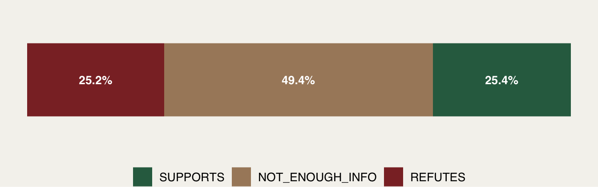
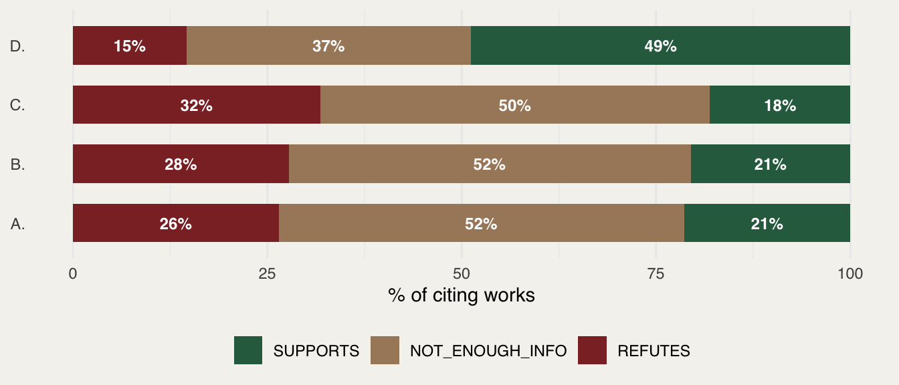
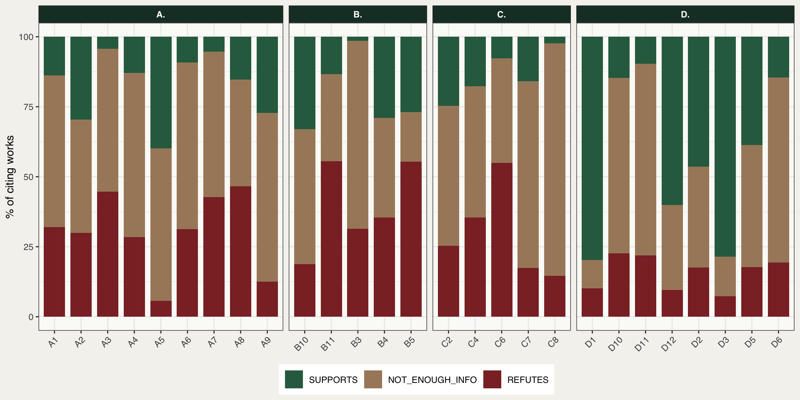
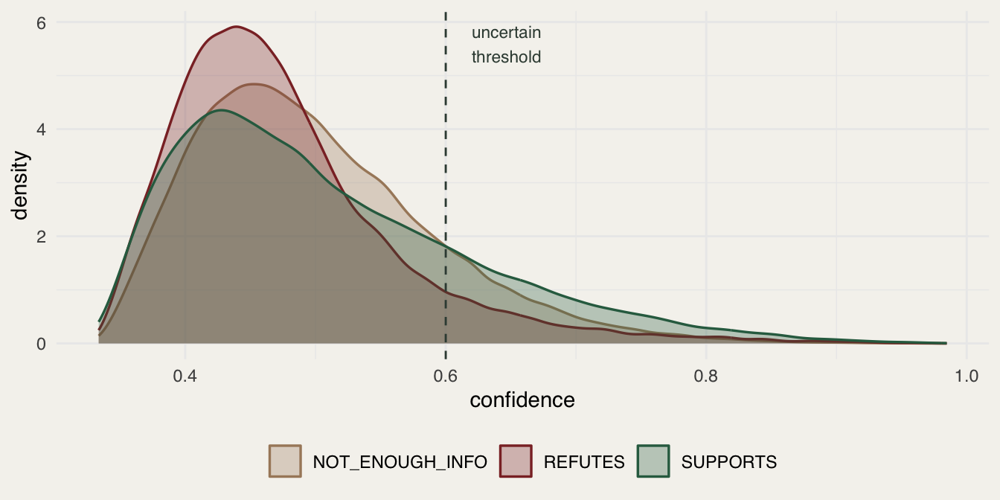
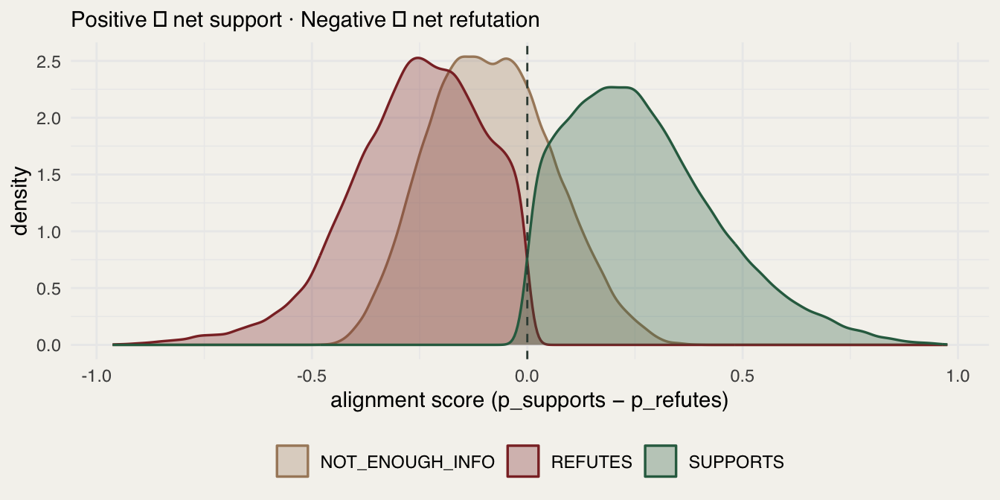

| Label | Works | % |
|---|---|---|
| SUPPORTS | 49,484 | 25.4 |
| NOT_ENOUGH_INFO | 96,164 | 49.4 |
| REFUTES | 49,013 | 25.2 |
GA1 · config: deberta_zeroshot
1 July 2026
This report summarises the first-pass NLI alignment scores for GA1 (Global Assessment 1), produced by the deberta_zeroshot pipeline using MoritzLaurer/deberta-v3-large-zeroshot-v2.0 at max_length = 256. Each citing work is scored against its partition’s Background Message (BM) as SUPPORTS, REFUTES, or NOT_ENOUGH_INFO.
None
Interpretation caveatThe 86 % uncertainty rate and near-chance median confidence (~0.47) reflect a known limitation of zero-shot NLI on this task, not a pipeline failure. The per-BM breakdown below shows the signal is highly structured — KM D performs well; KMs A–C show REFUTES inflation. Use the continuous alignment score (
p_supports − p_refutes) for thresholding; do not act on raw argmax labels for KMs A–C without Phase-2 LLM review.
| Label | Works | % |
|---|---|---|
| SUPPORTS | 49,484 | 25.4 |
| NOT_ENOUGH_INFO | 96,164 | 49.4 |
| REFUTES | 49,013 | 25.2 |

| KM | SUPPORTS % | NEI % | REFUTES % |
|---|---|---|---|
| A. | 21.4 | 52.2 | 26.4 |
| B. | 20.5 | 51.7 | 27.7 |
| C. | 18.1 | 50.1 | 31.8 |
| D. | 48.8 | 36.6 | 14.6 |


| KM | BM | SUPPORTS % | NEI % | REFUTES % |
|---|---|---|---|---|
| A. | A1 | 13.8 | 54.3 | 32.0 |
| A. | A2 | 29.5 | 40.6 | 29.9 |
| A. | A3 | 4.3 | 51.1 | 44.6 |
| A. | A4 | 12.9 | 58.6 | 28.5 |
| A. | A5 | 39.8 | 54.5 | 5.7 |
| A. | A6 | 9.2 | 59.6 | 31.2 |
| A. | A7 | 5.3 | 52.0 | 42.7 |
| A. | A8 | 15.3 | 38.1 | 46.7 |
| A. | A9 | 27.2 | 60.2 | 12.5 |
| B. | B10 | 33.1 | 48.2 | 18.7 |
| B. | B11 | 13.3 | 31.1 | 55.6 |
| B. | B3 | 1.5 | 67.0 | 31.5 |
| B. | B4 | 29.0 | 35.6 | 35.4 |
| B. | B5 | 26.9 | 17.7 | 55.4 |
| C. | C2 | 24.7 | 50.0 | 25.4 |
| C. | C4 | 17.7 | 46.8 | 35.5 |
| C. | C6 | 7.8 | 37.3 | 55.0 |
| C. | C7 | 15.9 | 66.7 | 17.4 |
| C. | C8 | 2.3 | 83.1 | 14.6 |
| D. | D1 | 79.8 | 10.1 | 10.1 |
| D. | D10 | 14.7 | 62.7 | 22.7 |
| D. | D11 | 9.6 | 68.5 | 21.9 |
| D. | D12 | 60.1 | 30.4 | 9.5 |
| D. | D2 | 46.3 | 36.1 | 17.6 |
| D. | D3 | 78.6 | 14.0 | 7.4 |
| D. | D5 | 38.6 | 43.7 | 17.7 |
| D. | D6 | 14.6 | 66.1 | 19.3 |
| Label | n | Mean | Median | P25 | P75 |
|---|---|---|---|---|---|
| SUPPORTS | 49,484 | 0.508 | 0.483 | 0.422 | 0.574 |
| NOT_ENOUGH_INFO | 96,164 | 0.499 | 0.484 | 0.432 | 0.552 |
| REFUTES | 49,013 | 0.475 | 0.458 | 0.415 | 0.512 |

The alignment score (p_supports − p_refutes) is a continuous summary on [−1, +1] that is more informative than the argmax label for downstream thresholding and ranking.
| KM | BM | n | Mean aln | SD | SUPP % | REF % | NEI % | Unc % |
|---|---|---|---|---|---|---|---|---|
| A. | A1 | 15,588 | -0.085 | 0.183 | 13.8 | 32.0 | 54.3 | 95.5 |
| A. | A2 | 19,974 | -0.012 | 0.307 | 29.5 | 29.9 | 40.6 | 81.8 |
| A. | A3 | 3,045 | -0.195 | 0.131 | 4.3 | 44.6 | 51.1 | 93.8 |
| A. | A4 | 1,273 | -0.090 | 0.187 | 12.9 | 28.5 | 58.6 | 90.1 |
| A. | A5 | 21,645 | 0.095 | 0.188 | 39.8 | 5.7 | 54.5 | 87.8 |
| A. | A6 | 24,082 | -0.137 | 0.157 | 9.2 | 31.2 | 59.6 | 89.5 |
| A. | A7 | 4,536 | -0.190 | 0.165 | 5.3 | 42.7 | 52.0 | 91.5 |
| A. | A8 | 3,474 | -0.087 | 0.161 | 15.3 | 46.7 | 38.1 | 95.5 |
| A. | A9 | 1,567 | 0.019 | 0.159 | 27.2 | 12.5 | 60.2 | 95.5 |
| B. | B10 | 27,480 | 0.034 | 0.222 | 33.1 | 18.7 | 48.2 | 87.8 |
| B. | B11 | 270 | -0.148 | 0.188 | 13.3 | 55.6 | 31.1 | 93.0 |
| B. | B3 | 21,412 | -0.275 | 0.146 | 1.5 | 31.5 | 67.0 | 74.0 |
| B. | B4 | 4,320 | -0.021 | 0.220 | 29.0 | 35.4 | 35.6 | 90.4 |
| B. | B5 | 4,612 | -0.081 | 0.252 | 26.9 | 55.4 | 17.7 | 89.0 |
| C. | C2 | 4,073 | -0.024 | 0.198 | 24.7 | 25.4 | 50.0 | 91.2 |
| C. | C4 | 3,387 | -0.078 | 0.195 | 17.7 | 35.5 | 46.8 | 94.2 |
| C. | C6 | 1,315 | -0.159 | 0.137 | 7.8 | 55.0 | 37.3 | 97.0 |
| C. | C7 | 264 | -0.017 | 0.179 | 15.9 | 17.4 | 66.7 | 95.5 |
| C. | C8 | 741 | -0.185 | 0.131 | 2.3 | 14.6 | 83.1 | 72.9 |
| D. | D1 | 7,412 | 0.258 | 0.244 | 79.8 | 10.1 | 10.1 | 71.5 |
| D. | D10 | 825 | -0.058 | 0.204 | 14.7 | 22.7 | 62.7 | 83.8 |
| D. | D11 | 5,716 | -0.103 | 0.174 | 9.6 | 21.9 | 68.5 | 86.9 |
| D. | D12 | 7,232 | 0.185 | 0.216 | 60.1 | 9.5 | 30.4 | 84.2 |
| D. | D2 | 6,210 | 0.106 | 0.253 | 46.3 | 17.6 | 36.1 | 84.2 |
| D. | D3 | 1,234 | 0.296 | 0.251 | 78.6 | 7.4 | 14.0 | 64.7 |
| D. | D5 | 859 | 0.071 | 0.261 | 38.6 | 17.7 | 43.7 | 81.6 |
| D. | D6 | 2,115 | -0.025 | 0.156 | 14.6 | 19.3 | 66.1 | 88.6 |

KM D is in a different class from A, B, C. With 48.8 % SUPPORTS and only 14.6 % REFUTES overall, and individual BMs D1 (79.8 % SUPPORTS), D3 (78.6 %), and D12 (60.1 %) showing clear, consistent signals at comparatively lower uncertainty (65–84 %), KM D is the only part of GA1 where zero-shot NLI produces credible output. D3 and D1 have the best-calibrated scores in the entire dataset.
Likely reason: D-series BMs are probably more concrete and empirically testable — biodiversity metrics, species trends, ecosystem services — the kind of claims abstracts engage with directly.
None
REFUTES inflation — KMs A, B, CSeveral BMs have REFUTES > SUPPORTS by a wide margin that is not scientifically credible:
BM SUPPORTS REFUTES Interpretation B11 13 % 56 % Likely false positives B5 27 % 55 % Likely false positives C6 8 % 55 % Likely false positives A3 4 % 45 % Likely false positives A7 5 % 43 % Likely false positives A8 15 % 47 % Likely false positives These are not credible. Citing papers of an assessment should not be 55 % refuting it. This is the well-documented zero-shot NLI failure mode: the hypothesis “This paper refutes the following claim: …” draws spurious entailment when the BM contains complex, multi-part, or politically nuanced language. The model fires on surface-level topical tension rather than genuine contradiction.
None
Noise BMs — effectively randomThree BMs show SUPPORTS ≈ REFUTES — the argmax label is meaningless here:
- A2 29.5 % vs 29.9 % — coin flip
- C2 24.7 % vs 25.4 % — coin flip
- B4 29.0 % vs 35.4 % — near coin flip
For these, only the continuous alignment score and the raw probability triplet carry any information.
A5 (39.8 % SUPPORTS, 5.7 % REFUTES, mean alignment +0.095) is the only BM in KMs A–C with a clearly positive signal. Its claim is likely more concrete or empirically specific than its neighbours — worth inspecting manually as a calibration reference.
p_supports − p_refutes for ranking rather than argmax labels. Papers with very high p_nei can be deprioritised for expert review.max_length: 256 is probably hurting KMs A–C. Truncating abstract tails removes findings — the part that matters most for support/refute judgements on conceptual BMs. The base-model-at-512 comparison (deberta_zeroshot_v3) is the highest-priority next experiment.Pipeline: IPBES BM Fact Checker · NLI server: ghcr.io/rkrug/nli-runpod · Model read from /health at run time and recorded as nli_model in output parquet.